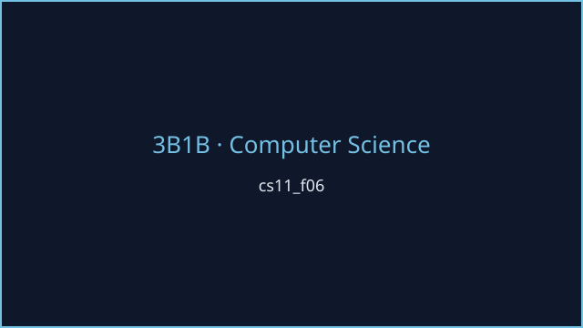

সাধারণ বিট ০ বা ১—যেকোনো একটি। কিউবিট একসাথে ০ ও ১-এর ''সুপারপজিশনে'' থাকতে পারে। একে একটি ভেক্টর দিয়ে লেখা যায়, যার দুটি উপাংশ যথাক্রমে ০ ও ১-এর ''অ্যাম্প্লিচিউড''।
অ্যাম্প্লিচিউডের বর্গই হলো সম্ভাবনা—কিন্তু অ্যাম্প্লিচিউড নিজে ঋণাত্মক হতে পারে, আর এই ''চিহ্ন''-ই কোয়ান্টামের শক্তি।
$n$টি কিউবিট একসাথে $2^n$টি অবস্থার সুপারপজিশনে থাকে। অর্থাৎ ৩০টি কিউবিট প্রায় ১০ কোটি অবস্থা একসাথে ''ধরে''—ক্লাসিক্যাল কম্পিউটারের চেয়ে অনেক বড় স্টেট স্পেস।
কিন্তু এক নজরে সব অবস্থা ''দেখা'' যায় না—পরিমাপ করলেই অবস্থা একটি মাত্র ফলাফলে ''ভেঙে'' পড়ে। তাই কৌশল হলো হস্তক্ষেপ ব্যবহার করে সঠিক উত্তরের সম্ভাবনা বাড়ানো।
ধরা যাক $N$টি আইটেমের মাঝে একটি ''চিহ্নিত'' আইটেম খুঁজতে হবে। ক্লাসিক্যাল কম্পিউটারে গড়ে $N/2$ বার দেখতে হয়—সবচেয়ে খারাপে $N$ বার। কোয়ান্টামে কতটা কমানো যায়?
গ্রোভারের অ্যালগরিদম দুটি ধাপ বারবার করে—(১) ''অরাকেল'' দিয়ে লক্ষ্য অবস্থার চিহ্ন উল্টানো, (২) গড়ের সাপেক্ষে ''প্রতিফলন''। প্রতি বারে লক্ষ্যের অ্যাম্প্লিচিউড বেড়ে যায়।
প্রায় $\sqrt{N}$ বার পুনরাবৃত্তির পর সঠিক উত্তর পাওয়ার সম্ভাবনা প্রায় ১। অর্থাৎ ১০ লাখ আইটেমের জন্য ১০ লাখের বদলে প্রায় ১০০০টি ধাপ—বিশাল ত্বরণ।
গ্রোভার সব সমস্যা ত্বরান্বিত করে না—কেবল ''অনুসন্ধান''-এর মতো কিছু কাঠামোতে কাজ করে। আর $\sqrt{N}$ একটি ''দ্বিঘাত'' ত্বরণ, শোরের অ্যালগরিদমের মতো ''সূচক'' ত্বরণ নয়।
কোয়ান্টাম কম্পিউটার সাধারণ কম্পিউটারের বিকল্প নয়—এটি নির্দিষ্ট কাজের জন্য এক ''নতুন হাতিয়ার''।
নিচের ইন্টারেক্টিভ উপাদান ও কুইজের মাধ্যমে পাঠের ধারণা নিজে যাচাই করুন।
